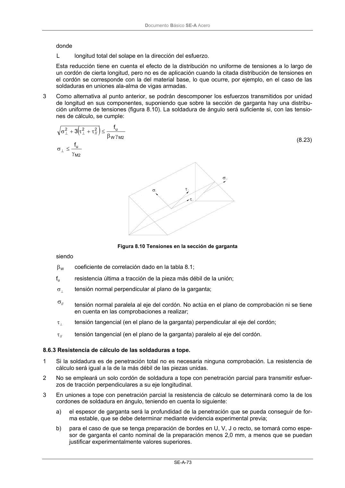

DB-SE-A · 8.6.3 Resistencia de cálculo de las soldaduras a tope. · versión 2007-10-23
SHA256: 9ed9ea694aabfbda3bfbbef40dfe9223fde05d13c35bc2ba9751e5a96a22a64f · página física 75 de 168 · métodos de encabezado
solo si están cotejados.
Formatos: Markdown · JSON de bloques · PDF p. 75 · imagen PNG
Documento Básico SE-A Acero SE-A-73 donde L longitud total del solape en la dirección del esfuerzo. Esta reducción tiene en cuenta el efecto de la distribución no uniforme de tensiones a lo largo de un cordón de cierta longitud, pero no es de aplicación cuando la citada distribución de tensiones en el cordón se corresponde con la del material base, lo que ocurre, por ejemplo, en el caso de las soldaduras en uniones ala-alma de vigas armadas. 3 Como alternativa al punto anterior, se podrán descomponer los esfuerzos transmitidos por unidad de longitud en sus componentes, suponiendo que sobre la sección de garganta hay una distribu- ción uniforme de tensiones (figura 8.10). La soldadura de ángulo será suficiente si, con las tensio- nes de cálculo, se cumple: ( ) 2 M u 2 M W u 2 // 2 2 f f 3 γ ≤ σ γ β ≤ τ + τ + σ ⊥ ⊥ ⊥ (8.23) Figura 8.10 Tensiones en la sección de garganta siendo W β coeficiente de correlación dado en la tabla 8.1; fu resistencia última a tracción de la pieza más débil de la unión; ⊥ σ tensión normal perpendicular al plano de la garganta; // σ tensión normal paralela al eje del cordón. No actúa en el plano de comprobación ni se tiene en cuenta en las comprobaciones a realizar; ⊥ τ tensión tangencial (en el plano de la garganta) perpendicular al eje del cordón; // τ tensión tangencial (en el plano de la garganta) paralelo al eje del cordón. 8.6.3 Resistencia de cálculo de las soldaduras a tope. 1 Si la soldadura es de penetración total no es necesaria ninguna comprobación. La resistencia de cálculo será igual a la de la más débil de las piezas unidas. 2 No se empleará un solo cordón de soldadura a tope con penetración parcial para transmitir esfuer- zos de tracción perpendiculares a su eje longitudinal. 3 En uniones a tope con penetración parcial la resistencia de cálculo se determinará como la de los cordones de soldadura en ángulo, teniendo en cuenta lo siguiente: a) el espesor de garganta será la profundidad de la penetración que se pueda conseguir de for- ma estable, que se debe determinar mediante evidencia experimental previa; b) para el caso de que se tenga preparación de bordes en U, V, J o recto, se tomará como espe- sor de garganta el canto nominal de la preparación menos 2,0 mm, a menos que se puedan justificar experimentalmente valores superiores.
